One image + one prompt each. The characters' action sheets are in the cast above; their costume kits are on the character kits page.
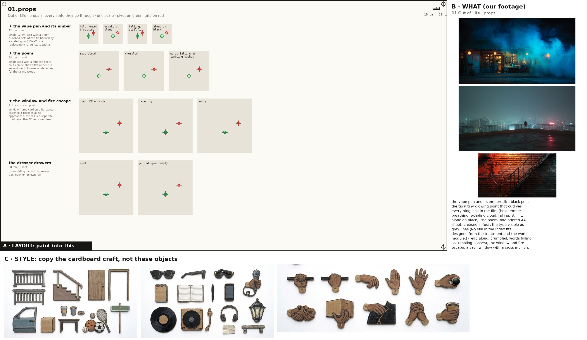
Props, every state props
Paint one sheet of cut-out puppet parts for a paper-puppet film, using the attached image. Panel A is the exact layout, panel B is our footage for these props (reference: copy the object, not the photo style), panel C is the style. STYLE (panel C): flat cards cut from corrugated cardboard, gouache with confident ink linework, the flutes faintly showing through the paint, a thin raw kraft-brown cut edge round every card, brass split-pin brads; shot flat-on, even light, no shadows, no perspective. Copy the craft from C, not the clothes in it. WHAT (panel B): the props of the poem 'Out of Life', one row each, every state of a prop in its own cell, left to right: the vape pen and its ember: slim black pen, the tip a tiny glowing point that outlives everything else in the film (held, ember breathing, exhaling cloud, falling, still lit, alone on black); the poem: one printed A4 sheet, creased in four, the type visible as grey lines (No still in the index fits; designed from the treatment and the world module.) (read aloud, crumpled, words falling as tumbling dashes); the window and fire escape: a sash window with a cross mullion, and outside it a steel landing and rail (open, EX outside, receding, empty); the dresser drawers: three plain wooden drawers with brass pulls, pulled out and pushed in by nobody (No still in the index fits; designed from the treatment and the world module.) (shut, pulled open, empty); the TV: flat TV on a low stand showing world chaos (No still in the index fits; designed from the treatment and the world module.) (world chaos, flicker); escape screens: floating phone- and TV-shaped panes: pills, parties, feeds (drifting past the fall); the hole in the parquet: a ragged black hole in herringbone parquet (No still in the index fits; designed from the treatment and the world module.) (closed, opening, open black); the spiral escape in the light well: black iron spiral stair, crescent treads, a planter on each landing, hung in an orange shaft of haze (clear, haze-filled); the catwalk with the glowing kerb: a curving concrete deck far below, its edge a thin orange glowing line, three tiny figures walking away (lit). Paint each state as a flat cardboard prop card at the size its cell gives, the same object across its row; a brass brad on the green cross (its pivot); where there is a red cross, that is where a hand grips it. LAYOUT (panel A): paint one card inside each grey ghost, in the same place, size and angle, inside its dashed outline; a brass brad exactly on every green cross; each red cross must fall inside that card's rounded end. NEVER draw a pelvis, hip, shorts or briefs card (the thighs end in a rounded seat that tucks under the hem), a sleeveless vest, lace-up boots, or sunglasses painted onto a head. OUTPUT: only the painted cards on a pure white 2048x1152 sheet laid out as panel A. Leave out panels B and C, the crosses, labels, ruler, dashed lines and ghosts.
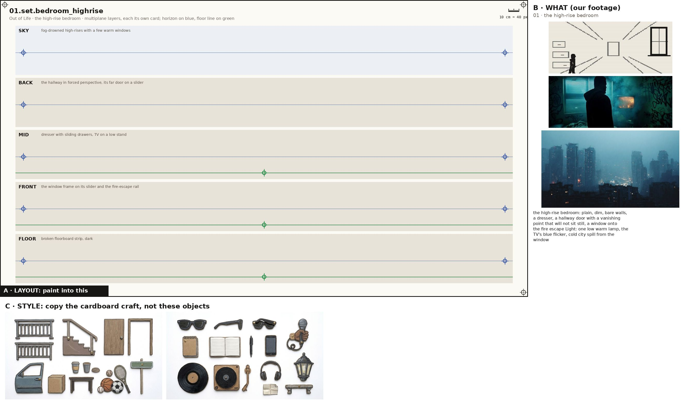
the high-rise bedroom set
Paint one sheet of cut-out puppet parts for a paper-puppet film, using the attached image. Panel A is the exact layout, panel B is our footage for this place (reference: copy the place, not the photo style), panel C is the style. STYLE (panel C): flat cards cut from corrugated cardboard, gouache with confident ink linework, the flutes faintly showing through the paint, a thin raw kraft-brown cut edge round every card, brass split-pin brads; shot flat-on, even light, no shadows, no perspective. Copy the craft from C, not the clothes in it. WHAT (panel B): the high-rise bedroom: plain, dim, bare walls, a dresser, a hallway door with a vanishing point that will not sit still, a window onto the fire escape Light: one low warm lamp, the TV's blue flicker, cold city spill from the window. SHEET: the place as five separate flat cardboard layers, one per band, painted to stack front to back in a multiplane rig: SKY: fog-drowned high-rises with a few warm windows; BACK: the hallway in forced perspective, its far door on a slider; MID: dresser with sliding drawers, TV on a low stand; FRONT: the window frame on its slider and the fire-escape rail; FLOOR: broken floorboard strip, dark. Each layer is its own card with a clean cut top edge and transparent gaps where the layer behind shows through; keep the horizon on the blue line and the floor on the green line in every band so they register. LAYOUT (panel A): paint one card inside each grey ghost, in the same place, size and angle, inside its dashed outline; a brass brad exactly on every green cross; each red cross must fall inside that card's rounded end. OUTPUT: only the painted cards on a pure white 2048x1152 sheet laid out as panel A. Leave out panels B and C, the crosses, labels, ruler, dashed lines and ghosts.
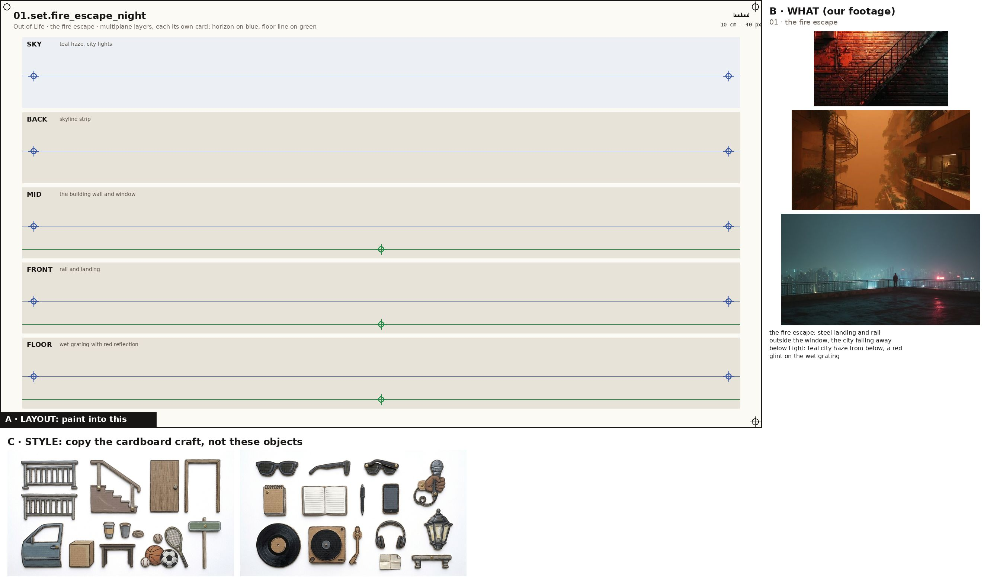
the fire escape set
Paint one sheet of cut-out puppet parts for a paper-puppet film, using the attached image. Panel A is the exact layout, panel B is our footage for this place (reference: copy the place, not the photo style), panel C is the style. STYLE (panel C): flat cards cut from corrugated cardboard, gouache with confident ink linework, the flutes faintly showing through the paint, a thin raw kraft-brown cut edge round every card, brass split-pin brads; shot flat-on, even light, no shadows, no perspective. Copy the craft from C, not the clothes in it. WHAT (panel B): the fire escape: steel landing and rail outside the window, the city falling away below Light: teal city haze from below, a red glint on the wet grating. SHEET: the place as five separate flat cardboard layers, one per band, painted to stack front to back in a multiplane rig: SKY: teal haze, city lights; BACK: skyline strip; MID: the building wall and window; FRONT: rail and landing; FLOOR: wet grating with red reflection. Each layer is its own card with a clean cut top edge and transparent gaps where the layer behind shows through; keep the horizon on the blue line and the floor on the green line in every band so they register. LAYOUT (panel A): paint one card inside each grey ghost, in the same place, size and angle, inside its dashed outline; a brass brad exactly on every green cross; each red cross must fall inside that card's rounded end. OUTPUT: only the painted cards on a pure white 2048x1152 sheet laid out as panel A. Leave out panels B and C, the crosses, labels, ruler, dashed lines and ghosts.
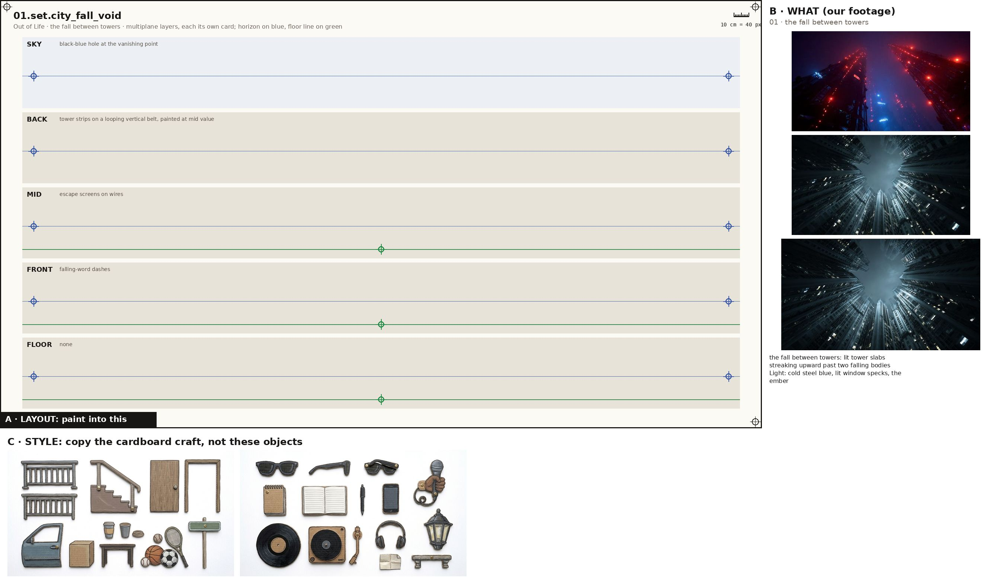
the fall between towers set
Paint one sheet of cut-out puppet parts for a paper-puppet film, using the attached image. Panel A is the exact layout, panel B is our footage for this place (reference: copy the place, not the photo style), panel C is the style. STYLE (panel C): flat cards cut from corrugated cardboard, gouache with confident ink linework, the flutes faintly showing through the paint, a thin raw kraft-brown cut edge round every card, brass split-pin brads; shot flat-on, even light, no shadows, no perspective. Copy the craft from C, not the clothes in it. WHAT (panel B): the fall between towers: lit tower slabs streaking upward past two falling bodies Light: cold steel blue, lit window specks, the ember. SHEET: the place as five separate flat cardboard layers, one per band, painted to stack front to back in a multiplane rig: SKY: black-blue hole at the vanishing point; BACK: tower strips on a looping vertical belt, painted at mid value; MID: escape screens on wires; FRONT: falling-word dashes; FLOOR: none. Each layer is its own card with a clean cut top edge and transparent gaps where the layer behind shows through; keep the horizon on the blue line and the floor on the green line in every band so they register. LAYOUT (panel A): paint one card inside each grey ghost, in the same place, size and angle, inside its dashed outline; a brass brad exactly on every green cross; each red cross must fall inside that card's rounded end. OUTPUT: only the painted cards on a pure white 2048x1152 sheet laid out as panel A. Leave out panels B and C, the crosses, labels, ruler, dashed lines and ghosts.
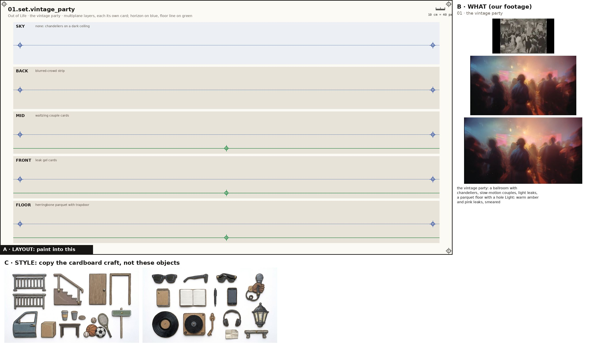
the vintage party set
Paint one sheet of cut-out puppet parts for a paper-puppet film, using the attached image. Panel A is the exact layout, panel B is our footage for this place (reference: copy the place, not the photo style), panel C is the style. STYLE (panel C): flat cards cut from corrugated cardboard, gouache with confident ink linework, the flutes faintly showing through the paint, a thin raw kraft-brown cut edge round every card, brass split-pin brads; shot flat-on, even light, no shadows, no perspective. Copy the craft from C, not the clothes in it. WHAT (panel B): the vintage party: a ballroom with chandeliers, slow-motion couples, light leaks, a parquet floor with a hole Light: warm amber and pink leaks, smeared. SHEET: the place as five separate flat cardboard layers, one per band, painted to stack front to back in a multiplane rig: SKY: none: chandeliers on a dark ceiling; BACK: blurred-crowd strip; MID: waltzing couple cards; FRONT: leak gel cards; FLOOR: herringbone parquet with trapdoor. Each layer is its own card with a clean cut top edge and transparent gaps where the layer behind shows through; keep the horizon on the blue line and the floor on the green line in every band so they register. LAYOUT (panel A): paint one card inside each grey ghost, in the same place, size and angle, inside its dashed outline; a brass brad exactly on every green cross; each red cross must fall inside that card's rounded end. OUTPUT: only the painted cards on a pure white 2048x1152 sheet laid out as panel A. Leave out panels B and C, the crosses, labels, ruler, dashed lines and ghosts.
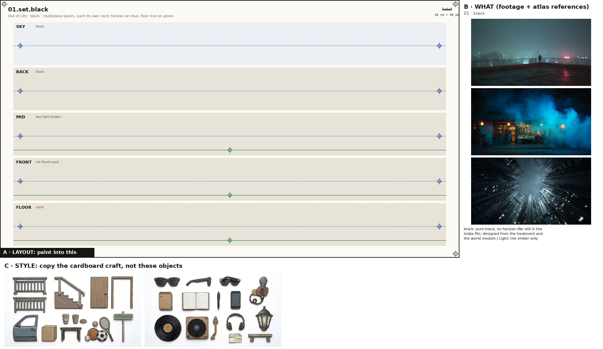
black set
Paint one sheet of cut-out puppet parts for a paper-puppet film, using the attached image. Panel A is the exact layout, panel B is our footage for this place (reference: copy the place, not the photo style), panel C is the style. STYLE (panel C): flat cards cut from corrugated cardboard, gouache with confident ink linework, the flutes faintly showing through the paint, a thin raw kraft-brown cut edge round every card, brass split-pin brads; shot flat-on, even light, no shadows, no perspective. Copy the craft from C, not the clothes in it. WHAT (panel B): black: pure black, no horizon (No still in the index fits; designed from the treatment and the world module.) Light: the ember only. SHEET: the place as five separate flat cardboard layers, one per band, painted to stack front to back in a multiplane rig: SKY: black; BACK: black; MID: two faint bodies; FRONT: ink-flood mask; FLOOR: none. Each layer is its own card with a clean cut top edge and transparent gaps where the layer behind shows through; keep the horizon on the blue line and the floor on the green line in every band so they register. LAYOUT (panel A): paint one card inside each grey ghost, in the same place, size and angle, inside its dashed outline; a brass brad exactly on every green cross; each red cross must fall inside that card's rounded end. OUTPUT: only the painted cards on a pure white 2048x1152 sheet laid out as panel A. Leave out panels B and C, the crosses, labels, ruler, dashed lines and ghosts.
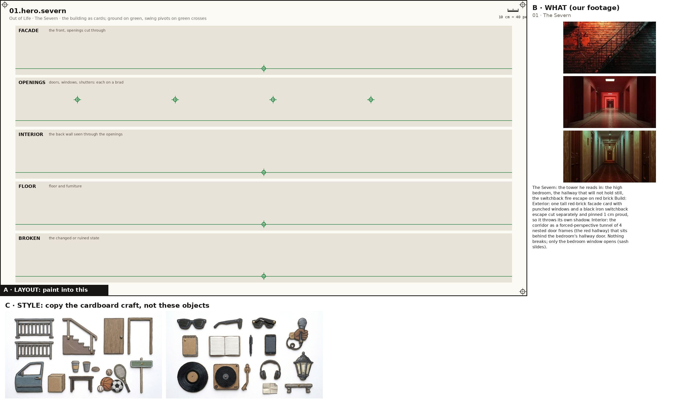
The Severn hero
Paint one sheet of cut-out puppet parts for a paper-puppet film, using the attached image. Panel A is the exact layout, panel B is the atlas reference for this building (copy the building, not the photo style), panel C is the style. STYLE (panel C): flat cards cut from corrugated cardboard, gouache with confident ink linework, the flutes faintly showing through the paint, a thin raw kraft-brown cut edge round every card, brass split-pin brads; shot flat-on, even light, no shadows, no perspective. Copy the craft from C, not the clothes in it. WHAT (panel B): The Severn: the tower he reads in: the high bedroom, the hallway that will not hold still, the switchback fire escape on red brick Build: Exterior: one tall red-brick facade card with punched windows and a black iron switchback escape cut separately and pinned 1 cm proud, so it throws its own shadow. Interior: the corridor as a forced-perspective tunnel of 4 nested door frames (the red hallway) that sits behind the bedroom's hallway door. Nothing breaks; only the bedroom window opens (sash slides).. SHEET: the building as separate flat cardboard cards, one per band: the FACADE with its window and door holes cut clean through; the OPENINGS (doors, shutters, windows) as their own cards on a brass brad at the green cross so they swing; the INTERIOR back wall seen through the openings; the FLOOR and furniture; and its BROKEN or changed state where the poem has one. Keep the ground on the green line in every band so the cards register. LAYOUT (panel A): paint one card inside each grey ghost, in the same place, size and angle, inside its dashed outline; a brass brad exactly on every green cross; each red cross must fall inside that card's rounded end. OUTPUT: only the painted cards on a pure white 2048x1152 sheet laid out as panel A. Leave out panels B and C, the crosses, labels, ruler, dashed lines and ghosts. No people on this sheet.
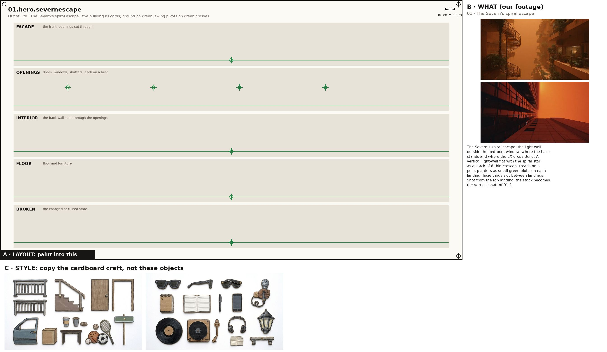
The Severn's spiral escape hero
Paint one sheet of cut-out puppet parts for a paper-puppet film, using the attached image. Panel A is the exact layout, panel B is the atlas reference for this building (copy the building, not the photo style), panel C is the style. STYLE (panel C): flat cards cut from corrugated cardboard, gouache with confident ink linework, the flutes faintly showing through the paint, a thin raw kraft-brown cut edge round every card, brass split-pin brads; shot flat-on, even light, no shadows, no perspective. Copy the craft from C, not the clothes in it. WHAT (panel B): The Severn's spiral escape: the light well outside the bedroom window: where the haze stands and where the EX drops Build: A vertical light-well flat with the spiral stair as a stack of 6 thin crescent treads on a pole, planters as small green blobs on each landing; haze cards slot between landings. Shot from the top landing, the stack becomes the vertical shaft of 01.2.. SHEET: the building as separate flat cardboard cards, one per band: the FACADE with its window and door holes cut clean through; the OPENINGS (doors, shutters, windows) as their own cards on a brass brad at the green cross so they swing; the INTERIOR back wall seen through the openings; the FLOOR and furniture; and its BROKEN or changed state where the poem has one. Keep the ground on the green line in every band so the cards register. LAYOUT (panel A): paint one card inside each grey ghost, in the same place, size and angle, inside its dashed outline; a brass brad exactly on every green cross; each red cross must fall inside that card's rounded end. OUTPUT: only the painted cards on a pure white 2048x1152 sheet laid out as panel A. Leave out panels B and C, the crosses, labels, ruler, dashed lines and ghosts. No people on this sheet.
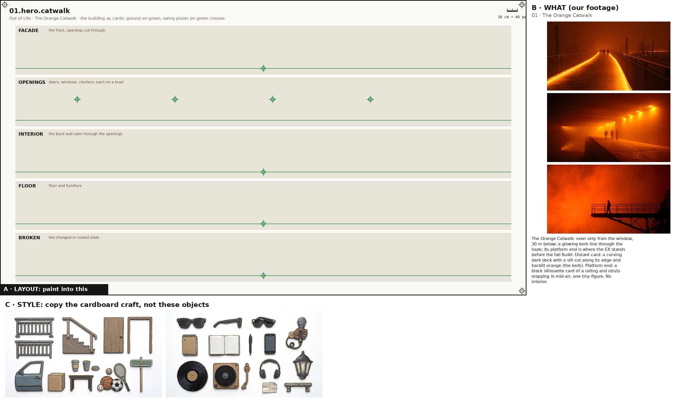
The Orange Catwalk hero
Paint one sheet of cut-out puppet parts for a paper-puppet film, using the attached image. Panel A is the exact layout, panel B is the atlas reference for this building (copy the building, not the photo style), panel C is the style. STYLE (panel C): flat cards cut from corrugated cardboard, gouache with confident ink linework, the flutes faintly showing through the paint, a thin raw kraft-brown cut edge round every card, brass split-pin brads; shot flat-on, even light, no shadows, no perspective. Copy the craft from C, not the clothes in it. WHAT (panel B): The Orange Catwalk: seen only from the window, 30 m below: a glowing kerb line through the haze; its platform end is where the EX stands before the fall Build: Distant card: a curving dark deck with a slit cut along its edge and backlit orange (the kerb). Platform end: a black silhouette card of a railing and struts stopping in mid-air, one tiny figure. No interior.. SHEET: the building as separate flat cardboard cards, one per band: the FACADE with its window and door holes cut clean through; the OPENINGS (doors, shutters, windows) as their own cards on a brass brad at the green cross so they swing; the INTERIOR back wall seen through the openings; the FLOOR and furniture; and its BROKEN or changed state where the poem has one. Keep the ground on the green line in every band so the cards register. LAYOUT (panel A): paint one card inside each grey ghost, in the same place, size and angle, inside its dashed outline; a brass brad exactly on every green cross; each red cross must fall inside that card's rounded end. OUTPUT: only the painted cards on a pure white 2048x1152 sheet laid out as panel A. Leave out panels B and C, the crosses, labels, ruler, dashed lines and ghosts. No people on this sheet.
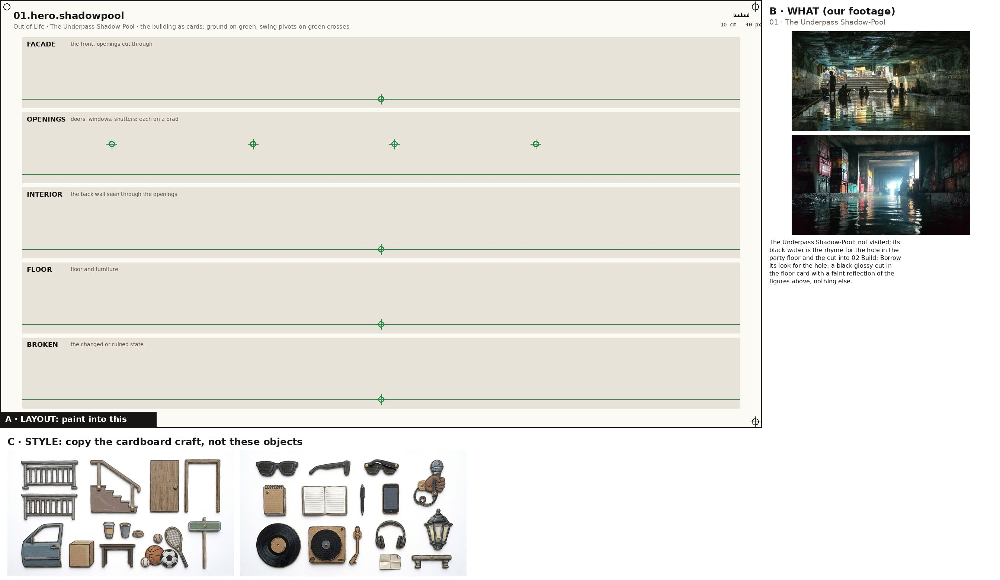
The Underpass Shadow-Pool hero
Paint one sheet of cut-out puppet parts for a paper-puppet film, using the attached image. Panel A is the exact layout, panel B is the atlas reference for this building (copy the building, not the photo style), panel C is the style. STYLE (panel C): flat cards cut from corrugated cardboard, gouache with confident ink linework, the flutes faintly showing through the paint, a thin raw kraft-brown cut edge round every card, brass split-pin brads; shot flat-on, even light, no shadows, no perspective. Copy the craft from C, not the clothes in it. WHAT (panel B): The Underpass Shadow-Pool: not visited; its black water is the rhyme for the hole in the party floor and the cut into 02 Build: Borrow its look for the hole: a black glossy cut in the floor card with a faint reflection of the figures above, nothing else.. SHEET: the building as separate flat cardboard cards, one per band: the FACADE with its window and door holes cut clean through; the OPENINGS (doors, shutters, windows) as their own cards on a brass brad at the green cross so they swing; the INTERIOR back wall seen through the openings; the FLOOR and furniture; and its BROKEN or changed state where the poem has one. Keep the ground on the green line in every band so the cards register. LAYOUT (panel A): paint one card inside each grey ghost, in the same place, size and angle, inside its dashed outline; a brass brad exactly on every green cross; each red cross must fall inside that card's rounded end. OUTPUT: only the painted cards on a pure white 2048x1152 sheet laid out as panel A. Leave out panels B and C, the crosses, labels, ruler, dashed lines and ghosts. No people on this sheet.
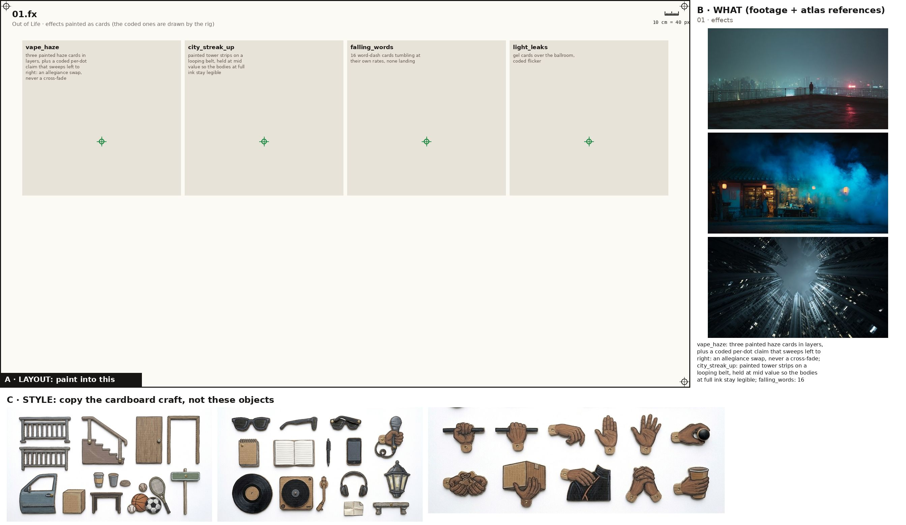
Painted effects fx
Paint one sheet of cut-out puppet parts for a paper-puppet film, using the attached image. Panel A is the exact layout, panel B is our footage for the mood, panel C is the style. STYLE (panel C): flat cards cut from corrugated cardboard, gouache with confident ink linework, the flutes faintly showing through the paint, a thin raw kraft-brown cut edge round every card, brass split-pin brads; shot flat-on, even light, no shadows, no perspective. Copy the craft from C, not the clothes in it. WHAT: the poem's painted effects, one per cell, as flat cardboard cards that a cut-out film moves in front of the camera: vape_haze: three painted haze cards in layers, plus a coded per-dot claim that sweeps left to right: an allegiance swap, never a cross-fade; city_streak_up: painted tower strips on a looping belt, held at mid value so the bodies at full ink stay legible; falling_words: 16 word-dash cards tumbling at their own rates, none landing; light_leaks: gel cards over the ballroom, coded flicker. A brass brad on the green cross of each. LAYOUT (panel A): paint one card inside each grey ghost, in the same place, size and angle, inside its dashed outline; a brass brad exactly on every green cross; each red cross must fall inside that card's rounded end. NEVER draw a pelvis, hip, shorts or briefs card (the thighs end in a rounded seat that tucks under the hem), a sleeveless vest, lace-up boots, or sunglasses painted onto a head. OUTPUT: only the painted cards on a pure white 2048x1152 sheet laid out as panel A. Leave out panels B and C, the crosses, labels, ruler, dashed lines and ghosts.